gulp-markdown2html 
markdown to html bootstrap page converter
Issues with the output should be reported on the marked issue tracker.
Install
$ npm install --save-dev gulp-markdown2html
Usage
var gulp = require('gulp');
var markdown2html = require('gulp-markdown2html');
gulp.task('default', function () {
return gulp.src('intro.md')
.pipe(markdown2html({
theme: 'cerulean'
}))
.pipe(gulp.dest('dist'));
});
DEMO
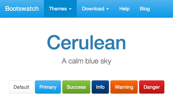
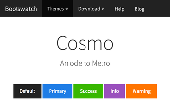
 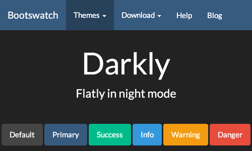
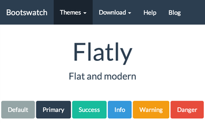
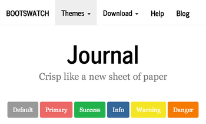
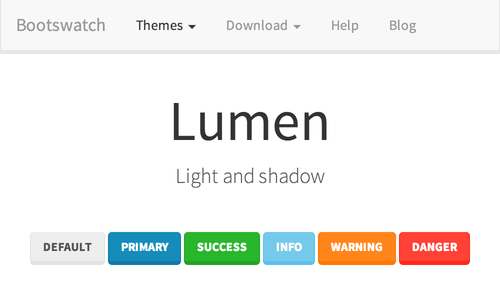
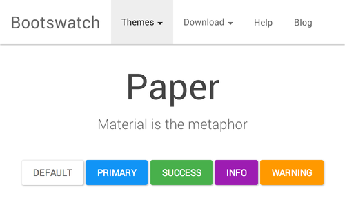
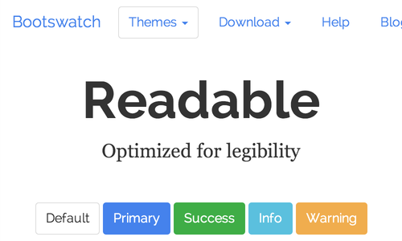
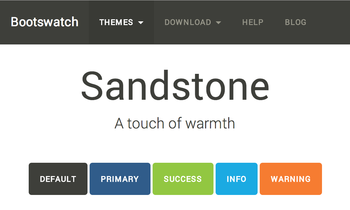
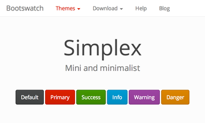
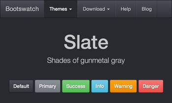
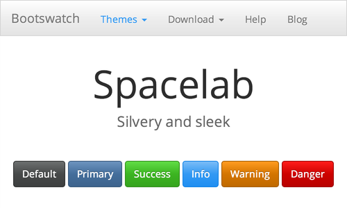
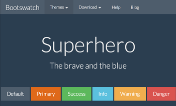
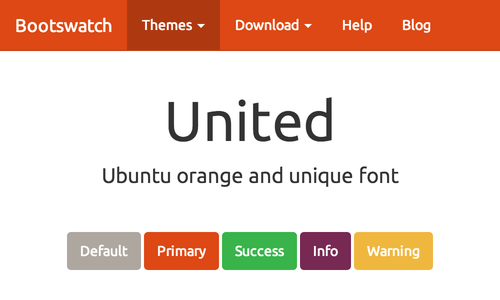
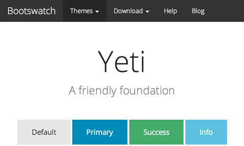
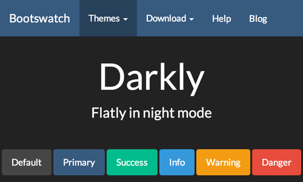
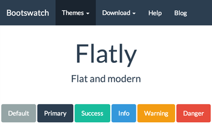
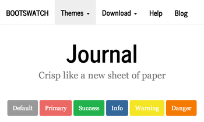
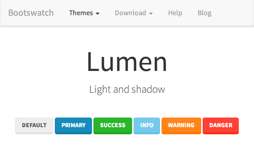
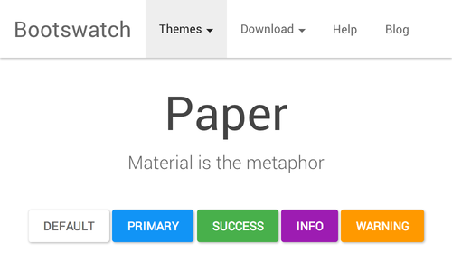
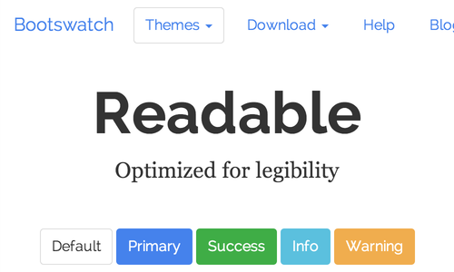
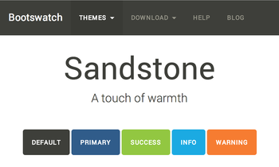
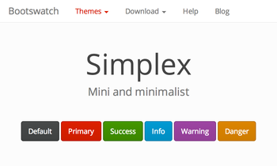
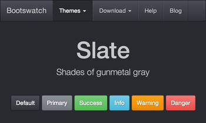
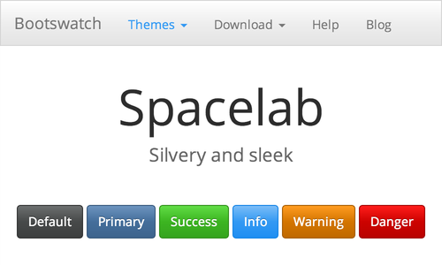
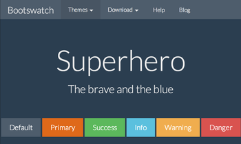
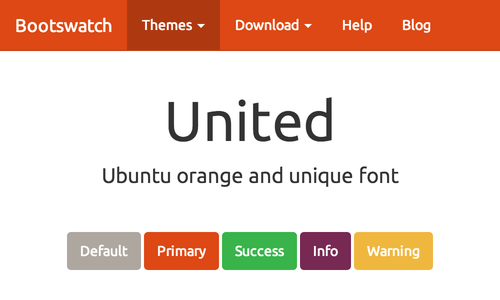
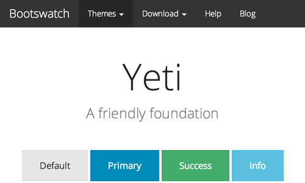
API
markdown2html(options)
See the marked options.
theme
Specify the bootswatch theme. see other themes
Type: String
Default: pure bootstrap
highlightTheme
Specify the highlightjs theme. see other themes
Type: String
Default: github
markdown.marked
Access the marked object to customize the lexer, parser or renderer.
License
MIT © mitsuruog